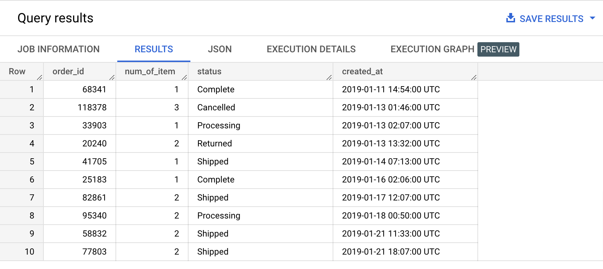

A view is a virtual table defined by a SQL query. When you create a view, you query it in the same way you query a table. When a user queries the view, the query results contain data only from the tables and fields specified in the query that defines the view.
https://cloud.google.com/bigquery/docs/views-intro
You can create a view to make data more accessible or controlled: shorter names, shorter query lengths, customized number and names of columns etc.
A view is similar to a table function but does not take any parameters. A view is also attached to a specific dataset.
Type the queries below in the BigQuery console and run them. Don't copy paste. 😉
CREATE OR REPLACE VIEW example_dataset.orders_public_fields_view AS
(
SELECT order_id, num_of_item, status, created_at
FROM bigquery-public-data.thelook_ecommerce.orders
);
SELECT *
FROM example_dataset.orders_public_fields_view
ORDER BY created_at
LIMIT 10;
Example results:

A view can be deleted from the user interface or using the DROP VIEW statement.
bigquery-public-data.thelook_ecommerce.events
Create a view that shows only the events that are generated by a user.
SELECT COUNT(*) AS event_count
FROM example_dataset.user_events_view
WHERE user_id IS NOT NULL;
| event_count |
|---|
| 1301394 |
SELECT COUNT(*) AS event_count
FROM example_dataset.user_events_view
WHERE user_id IS NULL;
| event_count |
|---|
| 0 |
CREATE OR REPLACE VIEW example_dataset.user_events_view AS
(
SELECT *
FROM bigquery-public-data.thelook_ecommerce.events
WHERE user_id IS NOT NULL
);